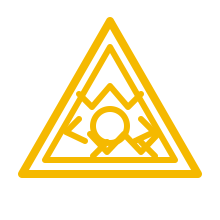

SOCIAL & VOLUNTEER · ASTANA
Делать добро —
Делать добро —
это про нас.
Мы объединяем людей, чтобы создавать события с душой, находить друзей и оставлять после себя что-то по-настоящему хорошее.
✳Живые события.
Настоящие люди.Астана, Казахстан
Открыты новым
Настоящие люди.Астана, Казахстан
Открыты новым
ВМЕСТЕ —
ЗНАЧИТ БОЛЬШЕ↗
ЗНАЧИТ БОЛЬШЕ↗

VOLUNTEERWITH HEART
ЛЮДИ, КОТОРЫЕ ДЕЙСТВУЮТ✳СОБЫТИЯ СО СМЫСЛОМ✳АСТАНА, КАЗАХСТАН✳ЛЮДИ, КОТОРЫЕ ДЕЙСТВУЮТ✳
01 / НАШЕ СООБЩЕСТВО
Город становится теплее, когда в нём есть мы.
Tumar Global — социальная и волонтёрская организация из Астаны. Мы собираем команду вокруг ярких городских событий и партнёрских инициатив, где у каждого есть своя важная роль.
Больше о нас ↗01город,
с которого всё начинаетсяASTANA · KZ
с которого всё начинаетсяASTANA · KZ
∞возможностей
быть полезнымJOIN & VOLUNTEER
быть полезнымJOIN & VOLUNTEER
02 / СОБЫТИЯ И ПРОЕКТЫМоменты, которые
Все истории в Instagram ↗Моменты, которые
нас объединяют.
 01 · CULTUREViennese Ball ↗
01 · CULTUREViennese Ball ↗
 02 · MUSICTyndá Music ↗
02 · MUSICTyndá Music ↗
 03 · COMMUNITYMasquerade Ball ↗
03 · COMMUNITYMasquerade Ball ↗
 04 · LIVEStand-up ↗
04 · LIVEStand-up ↗
 05 · SPORT & PEOPLEFC Jeńis ↗
05 · SPORT & PEOPLEFC Jeńis ↗
 06 · CITYMISS ASTANA ↗
06 · CITYMISS ASTANA ↗
 07 · PARTNERSHIPKAZ — WAL ↗
07 · PARTNERSHIPKAZ — WAL ↗
 08 · COLLABORATIONPartnerships ↗
08 · COLLABORATIONPartnerships ↗
Названия проектов — из публичных highlights Tumar Global. Фото — иллюстративные, не из Instagram организации.

ТВОЁ МЕСТО
В ЭТОЙ ИСТОРИИ
В ЭТОЙ ИСТОРИИ
03 / ТВОЙ ПЕРВЫЙ ШАГНе нужен опыт.
Не нужен опыт.
Нужно желание.
Заполни короткую анкету — и мы подберём события по возрасту, интересам и опыту. После подтверждения ты попадёшь в чат своей команды.
Найти своё событие ↗Не знаешь, с чего начать? Загляни в FAQ